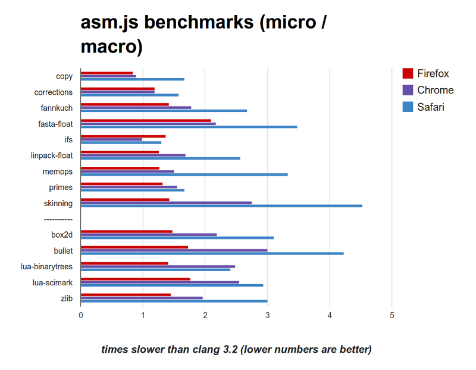

Emscripten and asm.js:
Approaching native
speed in JavaScript
Alon Zakai (Mozilla)
JavaScript..? Native speed..?

The Web

Biggest open and standards-based platform
Great way to reach people
But it only runs JavaScript..

Clang+LLVM | Emscripten |
Lets people port existing C/C++ codebases to the web
Can also port virtual machines (VMs) and run their languages on the web too: Python, Lua, Ruby
Open source (MIT/LLVM)
Began in 2010
Most of the codebase is not the core compiler, but libraries + toolchain + test suite
How does it work?
Compiling C++ is incredibly complicated, so we let Clang+LLVM reduce it to LLVM IR first
Compiling LLVM IR to JS is still pretty hard though!
LLVM vs. JavaScript
Random (unrelated) code samples from each:
%r = load i32* %p
%s = shl i32 %r, 16
%t = call i32 @calc(i32 %r, i32 %s)
br label %next
var x = new MyClass('name', 5).chain(function(arg) {
if (check(arg)) doMore({ x: arg, y: [1,2,3] });
else throw 'stop';
});
What could be more different? ;)
Numeric Types
| LLVM | ||
Performance Model
| LLVM | ||
Control Flow
| LLVM | ||
Variables
| LLVM | ||

Ironic, actually - many wish JS had block scope, like most languages...
Ok, how do we get
around these issues?
// LLVM IR
define i32 @func(i32* %p) {
%r = load i32* %p
%s = shl i32 %r, 16
%t = call i32 @calc(i32 %r, i32 %s)
ret i32 %t
}
⇒ Emscripten ⇒
// JS
function func(p) {
var r = HEAP[p];
return calc(r, r << 16);
}
Almost direct mapping in many cases
Another example:
float array[5000]; // C++
int main() {
for (int i = 0; i < 5000; ++i) {
array[i] += 1.0f;
}
}⇒ Emscripten ⇒
var heap = new ArrayBuffer(32768); // JS
var g = new Float32Array(heap);
function main() {
var a = 0, b = 0;
do {
a = 8 + (b << 2) | 0;
g[a >> 2] = +g[a >> 2] + 1.0;
b = b + 1 | 0;
} while ((b | 0) < 5000);
}This "style" of code is a subset of JS called asm.js
JS as a compilation target
JS began as a slow interpreted language
Competition ⇒ type-specializing JITs
Those are very good at statically typed code
But many heuristics lie between source code and actually being fully typed and optimized
What if we made some JS code really really easy to optimize, with as few heuristics as possible?
asm.js is one way to do that
asm.js is a subset of JavaScript (not a new language, no new semantics, all 100% backwards compatible), written in a format that is extremely easy to optimize
function twice(x) {
x = x | 0;
return x + x | 0;
}
(x+1)|0 ⇒ 32-bit integer + in modern JS VMs
No need to profile types, can be optimized ahead of time (AOT) from source
Loads in LLVM IR become reads from typed array in JS, which become reads in machine code
Emscripten's memory model is identical to LLVM's, by using a singleton typed array with aliasing views to represent memory, so can use all LLVM opts
var heap = new ArrayBuffer(32768);
var heap8 = new Int8Array(heap);
var heap16 = new Int16Array(heap);
var heap32 = new Int32Array(heap);
function mem_access() {
return heap32[heap8[100] >> 2];
}Optimizing
We run all LLVM optimizations (licm, alias analysis, etc.) - just like a normal compiler
Emscripten has 3 JS-specific optimizations as well
1. Reloop
block0:
; code0
br i1 %cond, label %block0, label %block1
block1:
; code1
br %label block0
Without relooping (emulated gotos):
var label = 0;
while (1) switch (label) {
case 0:
// code0
label = cond ? 0 : 1; break;
case 1:
// code1
label = 0; break;
}
1. Reloop
block0:
; code0
br i1 %cond, label %block0, label %block1
block1:
; code1
br %label block0
With relooping:
while (1) {
do {
// code0
} while (cond);
// code1
}
1. Reloop
Relooping allows JS VM to optimize better, as it can understand control flow
Emscripten Relooper code is generic, written in C++, and used by other projects (e.g., Duetto)
2. Expressionize
var a = g(x);
var b = a + y;
var c = HEAP[b];
var d = HEAP[20];
var e = x + y + z;
var f = h(d, e);
FUNCTION_TABLE[c](f);
⇒
FUNCTION_TABLE[HEAP[g(x) + y](h(HEAP[20], x + y + z));
2. Expressionize
Improves JIT time and execution speed: fewer variables ⇒ less stuff for JS engines to worry about
Reduces code size
3. Registerize
var a = g(x) | 0; // integers
var b = a + y | 0;
var c = HEAP[b] | 0;
var d = +HEAP[20]; // double
⇒
var a = g(x) | 0;
a = a + y | 0;
a = HEAP[a] | 0;
var d = +HEAP[20];
3. Registerize
Looks like regalloc, but goal is different: Minimize # of total variables (in each type), not spills
JS VMs will do regalloc, only they know the actual # of registers
Benefits code size & speed like expressionize
Missing Pieces
(Surprisingly!) JS already had almost everything a compiler target needs
But a few things turn out to be missing: 32-bit integer multiply, single-precision floats etc.
Thankfully the JS standards bodies are open to improving JS as a compiler target: Math.imul, Math.fround
Math.imul
As already mentioned, (x+y)|0 is semantically identical to 32-bit integer addition
However, (x*y)|0 is not identical to 32-bit integer multiplication!
Numbers are doubles in JS, and multiplying large-enough 32-bit values reaches the range (53 bits) where doubles get rounded
Solution: Add Math.imul to the JavaScript language
In practice, not as important as you might think: Most integer multiplies are of small constants, where the 53 bit "danger zone" is unreachable
Math.fround
xf32 +f32 yf32
==
f32( f64(xf32) +f64 f64(yf32) )
Also -,*,/,sqrt, etc. (but not everything, e.g. not sin)
Only true because of the exact definition of IEEE754 doubles and floats (# of bits in exponent, definition of rounding, etc.)
Where are float32 values?
Typed arrays, e.g. stuff like this is common in WebGL code
var f32 = new Float32Array(1000);
for (var i = 0; i < 1000; ++i) {
f32[i] = f32[i] + 1;
}
Optimizable :)
Fragile, though - needs to be cast back to float32 immediately
var f32 = new Float32Array(1000);
for (var i = 0; i < 1000; ++i) {
f32[i] = 2*f32[i] + 1;
}
Not optimizable :(
Math.fround: explicitly cast a number to 32-bit float precision
var f32 = new Float32Array(1000);
for (var i = 0; i < 1000; ++i) {
f32[i] = Math.fround(2*f32[i]) + 1;
}
Optimizable :)
fround support
In ES6, already in Firefox, Safari, Chrome (behind a flag), easy to polyfill:
Math.fround = Math.fround || (function() {
var temp = new Float32Array(1);
return function fround(x) {
temp[0] = +x;
return temp[0];
}
})();
or
Math.fround = Math.fround || function(x) { return x };
float32 microbenchmarks
| Matrix Inversions | Matrix Graphics | Exponential | FFT | |
| x86 | 33% | 60% | 30% | 16% |
| ARM | 38% | 38% | 24% | 33% |
% speedup with float optimizations (higher is better; source)
why is float32 faster?
Less precise, often less CPU cycles
Half the size, fewer cache misses
WebGL code often uses float32s, doing computation in float32 avoids conversions
Not yet, but possible: more registers/SIMD lanes
Overall, where does performance stand now?
{kind=link}
Unity demo
Also support from many other engines in the games industry
asm.js Opts in Firefox
AOT - full optimizing JIT always run, using full type info
AOT done in parallel, results cached
No need for bailouts, we know many corner cases are impossible, etc.
On 64-bit, can do zero-cost bounds checks using a signal handler
Implementation notes
OdinMonkey is the optimization module for asm.js in SpiderMonkey
Fairly small amount of code
Mostly just type checks and sends the results into the normal optimizing JIT
asm.js perf summary
Around 67% of native speed on Firefox, not much worse on other browsers
Sufficient even for AAA game engines
But why isn't it 100%?
Possible reasons
JavaScript VM optimizing JITs are not as good as C compilers?
Limitations of the JavaScript language?
Limitations of the asm.js format?
JS JITs not as good as C compilers?
Plausible, C compilers have many more years of development, many more optimizations implemented, etc.
Very hard today to speed up gcc by even 1% - it's already so optimized
The last few % to catch up to gcc are the hardest
Limitations of the JS?
Plausible, we've seen Math.imul and Math.fround which were necessary to add
We still lack things like ctlz, float-to-int bitcasts, etc. - those are rare though
JS is portable and sandboxed, natural to expect some overhead there
Limitations of asm.js?
Plausible, asm.js has some differences from C, like the memory model is a single big array, so there's a base offset that must always be added
Limitations of Emscripten's optimization passes (e.g., perhaps some loop structures are not well relooped)
Many possibilities here, how can we estimate them?
Idea: Run asm.js in a normal C compiler
Clang + LLVM+ Emscripten | Emscripten C Backend |
If it's as fast as the original C, nothing was lost when compiling to asm.js that a sufficiently smart compiler could optimize
{kind=link}
On most benchmarks C backend output is very close to the original performance, and much better than asm.js
Indicates most of the slowdown is stuff JS VMs can improve on
Not conclusive, though - does not split out measurement of sandboxing, for example
Varies a lot between benchmarks - e.g., zlib in C backend is closer to asm.js than original. Some of that is noise (one was faster in C backend than original!)
But looking at those where the C backend output is slower has been interesting than the original has helped focus us on areas to improve
zlib and fannkuch, the slowest, seem to suffer from the base offset used in every load and store preventing addressing mode optimizations, for example
Thank you for listening!
Questions?